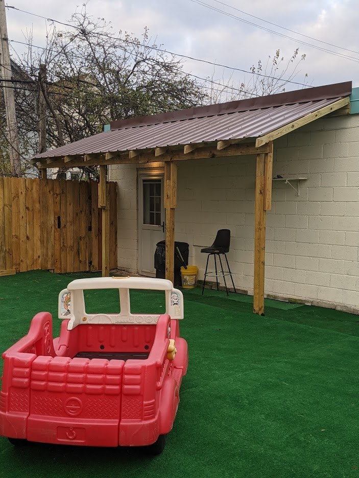
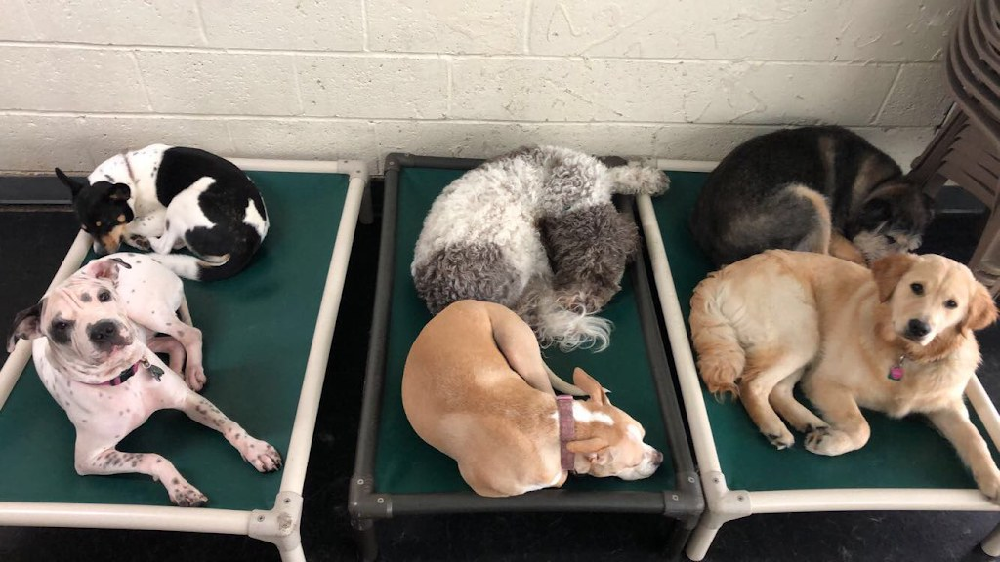

Visit A Joyful Dog
Dog daycare, training, grooming, and overnight boarding in Kenmore, with staff on the premises overnight.
Address: 1599 Kenmore Ave, Kenmore, NY 14217
Hours: Monday through Friday, 6:30 AM to 6:30 PM; Saturday and Sunday, 10:00 AM to 2:00 PM.
Phone: (716) 876-3647
Email: ajoyfuldog@gmail.com
Gallery


All three photos are real photos from the business's Google Maps listing. They show four dogs smiling at the camera against a turquoise wall, the fenced outdoor play yard with artificial turf and a red toy truck, and several dogs resting on green raised beds.
Contact
Call (716) 876-3647 Email ajoyfuldog@gmail.com
A Joyful Dog serves Kenmore, NY. Questions? Call (716) 876-3647.